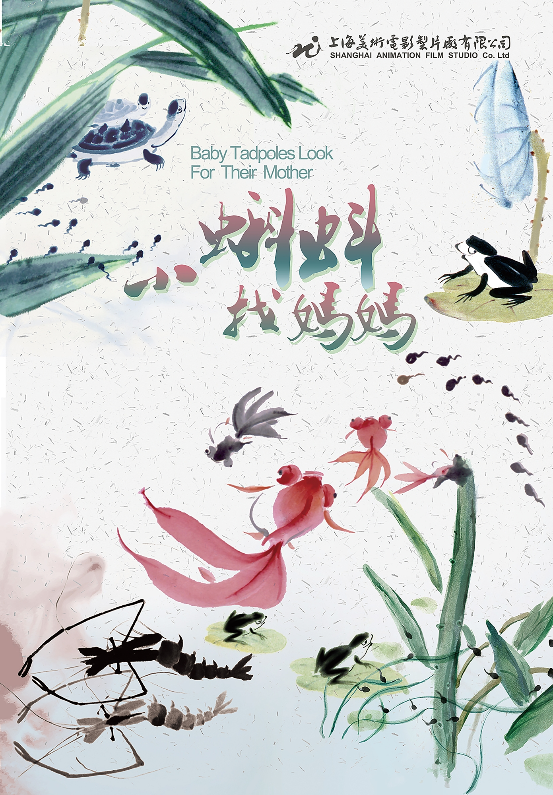

中国第一部水墨动画片
1960年创造了水墨动画新工艺，把典雅的中国水墨画与动画电影相结合，形成了最有中国特色的艺术风格。 在特伟、钱家骏的指导下，以唐澄、邬强、严定宪、徐景达为代表的动画设计人员和段孝萱、王世荣、游湧为代表的摄影人员把具有民族传统的水墨画搬上银幕，摄制了享誉世界的中国第一部水墨动画片《小蝌蚪找妈妈》
这是图片展示页面模板-01
1960年创造了水墨动画新工艺，把典雅的中国水墨画与动画电影相结合，形成了最有中国特色的艺术风格。 在特伟、钱家骏的指导下，以唐澄、邬强、严定宪、徐景达为代表的动画设计人员和段孝萱、王世荣、游湧为代表的摄影人员把具有民族传统的水墨画搬上银幕，摄制了享誉世界的中国第一部水墨动画片《小蝌蚪找妈妈》
1960年
1979年为庆祝建国三十年而摄制的《哪吒闹海》，是中国第一部宽银幕动画长片，它以浓重壮美的表现形式再一次焕发出民族风格的光彩。《哪吒闹海》根据古典小说《封神演义》部分章节改编，主要讲述了陈塘关李靖之子哪吒与东海龙宫之间的恩怨情仇。影片以丰富的想象力，围绕哪吒“生、死、再生、闹”四个重要环节，层层递进，扣人心弦。影片画面优美，情节感人，在海内外上映时收获了诸多好评。
1979年
《黑猫警长》是由戴铁郎、范马迪、熊南清联合执导，上海美术电影制片厂制作的二维动画系列片。机智勇敢的黑猫警长和它的警员伙伴们痛歼搬仓鼠，空中擒获凶残的食猴鹰，抓住偷吃红土的大象、河马、野猪，与一只耳斗智斗勇，侦破一个个案件，保卫了森林的安全。
2024-03-12
图片加载中...
没有更多了